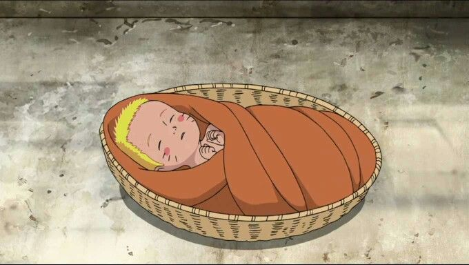
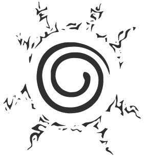
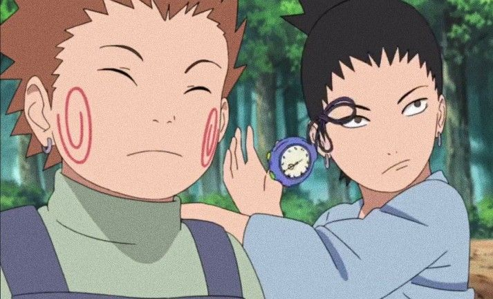
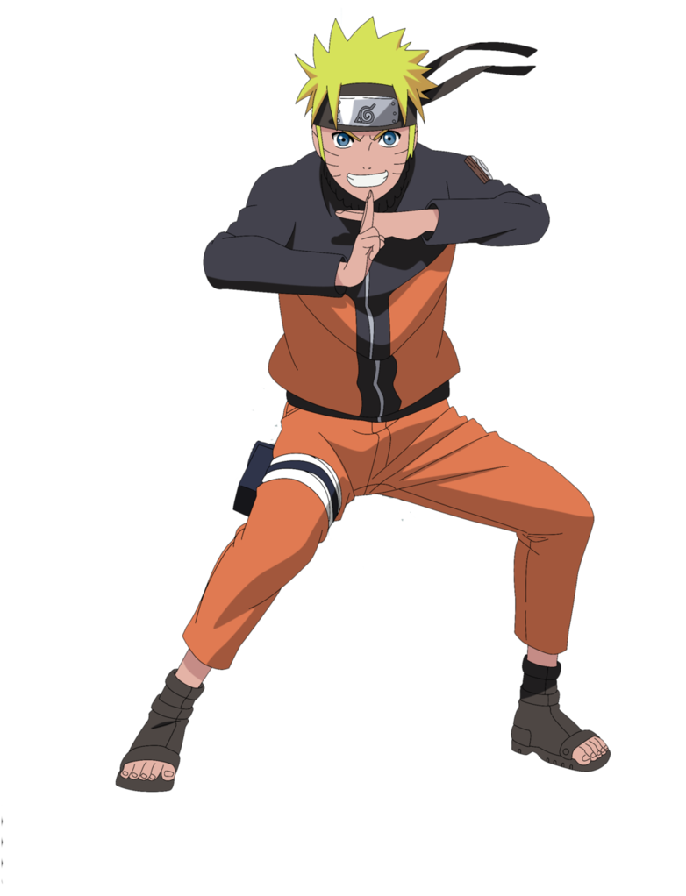
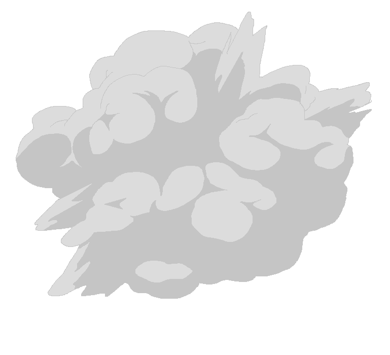
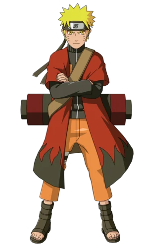
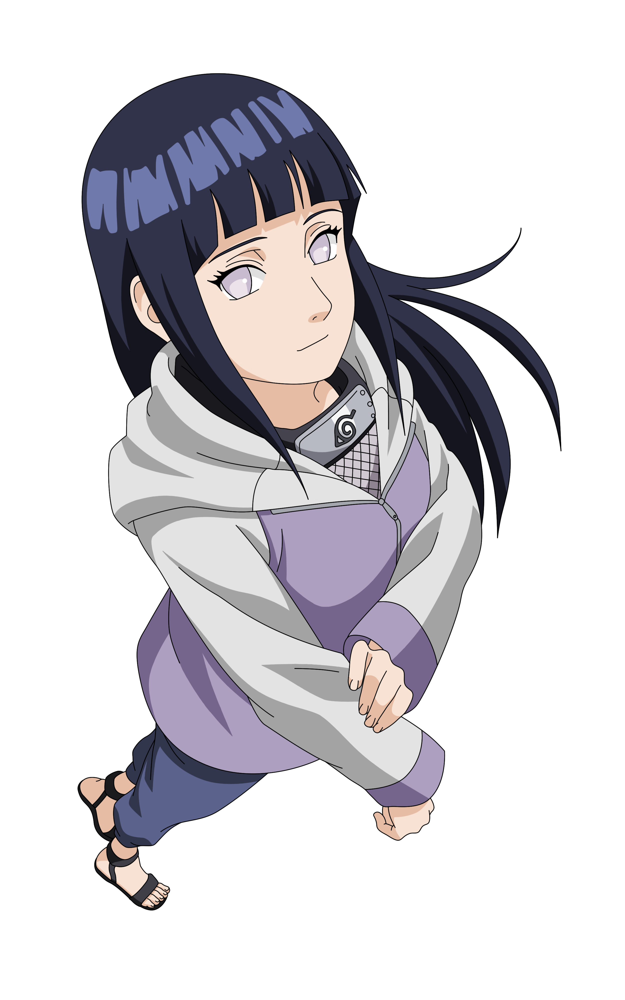

Undo the seal!
The Beginning
Naruto Uzumaki was born without any parents, both of them died while trying to save Naruto after an attack by the 9 Tailed Fox on the Village in the leaves. They were barely able to save him and had to seal the beast inside of their child to save the village. Because of this, Naruto grew up on his own, supervised by the third hokage, the leader of the village hidden in the leaves.
The 9 tails seal on Naruto's stomach.
the 9 tails
Growing up
While growing up Naruto didn't have many friends. The beast that destroyed the village years ago was sealed inside him, which made a lot of people resent him. Parents pulled away their children from Naruto and told them not to play with him. While in the academy, Naruto spend most his time playing pranks on everyone in the village, which made them dislike him even more. Even though Naruto didn't have any real friends yet, he did hang around with Choji and Shikamaru, who were also troublemakers in class. This was a very sad time for Naruto, he didn't have any friends or other people to connect with. The loneliness made him pull pranks so he would at least get some attention. And when he got the attention he made sure to tell everyone to pay attention to him, as he was going to be the next hokage, believe it!
Choji and Shikamaru
Naruto pulling a prank
Iruka Sensei
Getting better
When it was finally time to graduate for Naruto, he failed the test. Being distraught he let himself get manipulated to steal a secret scroll from the village. He got caught but they noticed that Naruto wasn't at fault. Together with sensei Iruka they fought against the manipulator. When Iruka sensie got hurt, Naruto peaked into the scroll. Inside was the shadow clone jutsu. After trying it Naruto found out he had a talent for this jutsu. He used it and created hundreds of clones. After fighting off the manipulator, Iruka sensei and naruto became friends and Iruka let him graduate, making Naruto an official ninja! That means that he will get a squad consisting of 2 other ninja and a sensei. This is when Naruto gets teamed up with Sasuke, Sakura and Kakashi sensei. After getting through Kakashi's harsh exam they all become good friends.
Click on Naruto!
 
Team 7 with Kakashi, Sasuke, Sakura and Naruto
Naruto with sage mode power.
Peak
After doing missions with team 7 for a while, Sasuke decides to leave the village to gain power to take revenge on his brother, who murdered his whole family. Naruto goes after him but fails to bring him back to the village. After promising Sakura to bring Sasuke back he goes through heavy training. While training Naruto sometimes goes overboard, which makes him use the 9 tails power, but he can't control it yet. While training for a couple years with master Jiraya, he almost killed him. When Naruto came back to the village he had improved a lot, defeating bigger and stronger enemies every time. When the village g0t obliterated by Pain, the leader of the group the Akatsuki, Naruto shows up and beats him, convincing Pain to revive all casualties in the village. After this Naruto is quickly seen as a hero and gets praised by everyone.
Pain about to blast the leaf village.
Pain

9 Tails Naruto
The End
Naruto ends up in a war, where Madara and Obito try to put everyone into an infinite tsukuyomi, where everyone gets into a dream for the rest of their lives. After mastering the 9 tials power Naruto was able to beat them. Then Kaguya showed up. A god from another world and the reason people in the shinobi world have these powers. After Sasuke and Naruto also beat her, they went toe to toe against eachother to dictate how the world will continue. Sasuke thinks he can control everyone while naruto thinks everyone should work together. After a long fight sasuke said that he had lost and would be Naruto's friend again. Back in the village Naruto started doing some missions again and would end up falling in love with Hinata, the girl who had a crush on him since the acedemy.
Sasuke vs Naruto
Hinata
